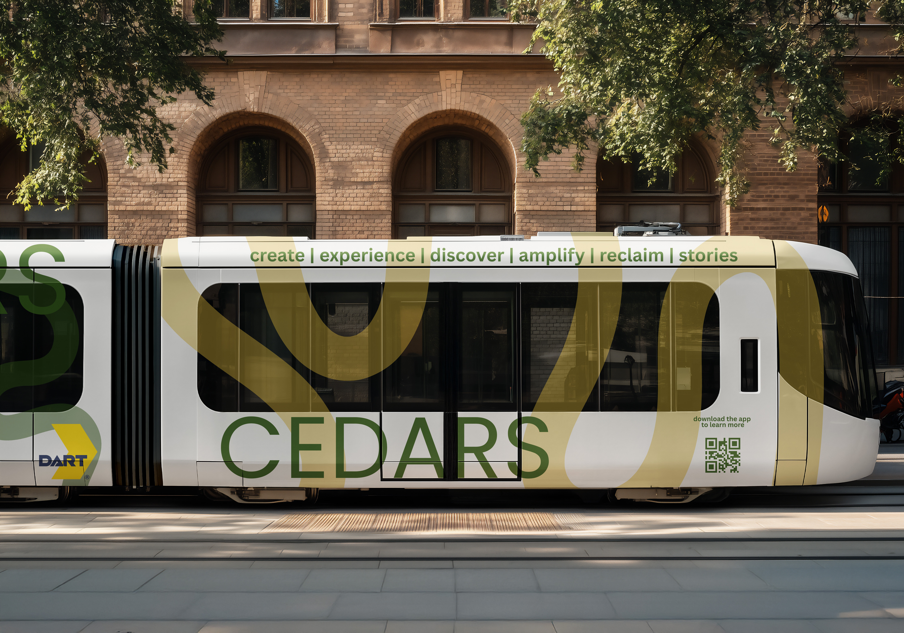

In Partnership with DART
CEDARS collaborates with Dallas Area Rapid Transit to bring South Dallas stories directly to commuters and visitors. Our NFC-enabled posters are installed throughout DART stations, making it easy for anyone to discover and share community heritage while traveling through Dallas.
This partnership ensures that South Dallas voices reach thousands of daily transit riders, connecting neighborhoods through shared stories and bringing visibility to community culture and events.